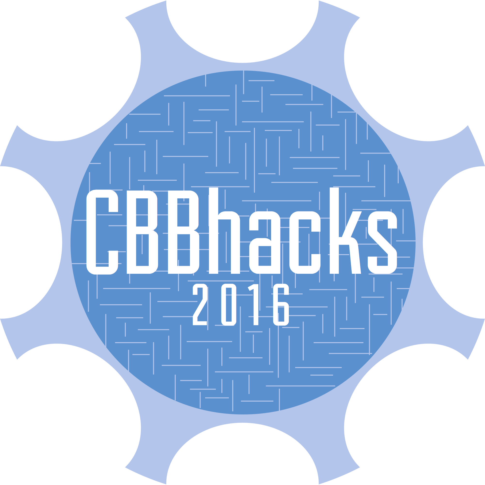

|
 |
|---|
|
Congratulations!
This email is to confirm you have been accepted to the first annual CBBhacks, to be held in Bowdoin College's Smith Union February 6th - 8th. As we explain on our website, we truly believe hackathons are the greatest thing to happen to education since the Internet. They are an amazing learning and networking opportunity for students, not only with your fellow peers but also from industry leaders and professionals who want to help you succeed. As such, we've made sure to invite many local and national entrepreneurs and developers from organizations you may have heard of, like Google, Hubspot and Code for America, but there will also be entrepreneurs coming from startups: companies like Raizlabs, MassChallenge, the Maine Technology Institute, and elsewhere. These people won't be there to give you an interview, but to help you as you plan and build our your projects, apps, or business plans. Not only will you be in the company of CEOs, entrepreneurs, venture capitalists, startup experts, and developers and designers from all walks of life, but you will also have access to hack on some of the latest and greatest state-of-the-art technology courtesy of the Major League Hacking Hardware Lab. This includes devices like Leap Motions, Oculus Rifts, and other such exciting tech. This is truly a one-of-a-kind event the likes of which has never been seen before in northern New England. Remember: you have 36 hours to put together something you can present to investors, entrepreneurs, and other judges. Food will be provided and a napping area will be arranged, so you never have to leave the hackathon space. With several hundred students expected at this event coming from schools from across the country, you'll have plenty of company. Trust us, once the event starts, you won't want to go. In the coming weeks, we will be sending out much more information about the event (including how you can connect with others who are attending, transportation info for those coming from nearby, and a detailed schedule). We do have lots of swag and over $2000 worth of prizes to give out to attendees, so we need a final confirmation from you to make sure we have a proper head-count. If you are attending, please fill out this very brief 10-second form by January 30th to let us know. Confirm Thank you again for signing up for the first annual Colby-Bates-Bowdoin hackathon. We look forward to seeing you in Brunswick! Please don't hesitate to reach out to us at contact@cbbhacks.org with any questions you might have. The CBBhacks Team |